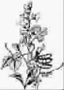

心中有朵扁豆花
●黑 白
“文革”期间，汪曾祺受到不公正待遇，被迫搬进了拥挤霉湿的大杂院。汪老是个随遇而安、气定神闲的达观人士，他把那间简陋的小屋收拾得一尘不染，还用破缸种了一架扁豆让老伴画画。扁豆藤蔓越长越密，无数蝴蝶一样的小紫花次第开放，把前屋人家的窗户遮得严严实实。窗户后面，时常可见一双幽深的眼睛注视着汪老，注视着汪老老伴一笔一画地在宣纸上涂抹。
秋天里，扁豆花落了，小耳朵一样的扁豆长起来，汪老摘了几斤送到前屋人家。敲开门他吃了一惊，男主人五大三粗，脸上横卧着一条蜈蚣似的刀疤。见了汪老，男主人开口道：能不能送我一幅扁豆花？汪老马上答应，回家挑了一幅最好的送来。后来有邻居告诉汪老：你真是吃了豹子胆，敢把他家窗户遮得密不透风！他是本地地头蛇，坐牢十年，人见人怕——可他对汪老总是极好，在窗口照面，一定会送来一个善意的微笑。那幅扁豆花，一直贴在他家显眼处。
智利著名诗人聂鲁达少年时骨瘦如柴，因为贫困，他甚至混在一群农民中去农场帮工，吃最粗劣的饭食，晚上累了，就睡在麦草垛上。后来他前往圣地亚哥求学，也是席地而睡，饿着肚子读书，每晚对着落日写诗。一天，在小酒馆里，两个流氓大打出手，聂鲁达上前劝慰，恶战双方的拳头同时砸向管闲事的聂鲁达，文弱的诗人哪里受得了流氓的拳头？但是，奇妙的一幕出现了：高举的拳头缓缓落下，松开成手掌，并且慢慢地犹豫地伸向聂鲁达：你是聂鲁达？诗人点点头。流氓的眼睛一亮，惊喜万分地说：我深爱的女子最喜爱你的诗歌。他注视着聂鲁达，眼睛里面不再有凶恶与杀气，而是充满了虔诚与尊敬。聂鲁达握着他的手幽默地说：你被诗歌打败了。
汪曾祺肯定斗不过地头蛇，聂鲁达也打不赢小流氓，是什么让我们的作家和诗人反败为胜？是诗歌的力量，是艺术的力量，是人世间最纯真的美与爱的力量。人之所以为人，就在于他有着对美与爱的本能向往，可能连他自己也并不知道——在人心中最隐秘的角落，总会有一架扁豆花在幽幽绽放。
(赵银举摘自《人民日报·海外版》2006年10月25日)